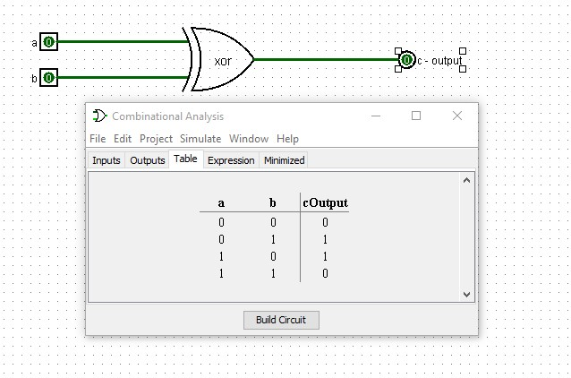
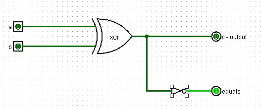
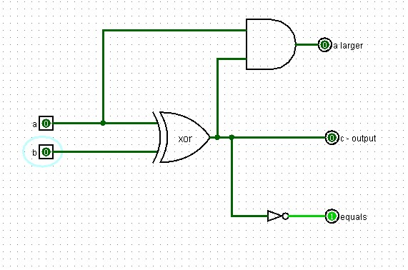
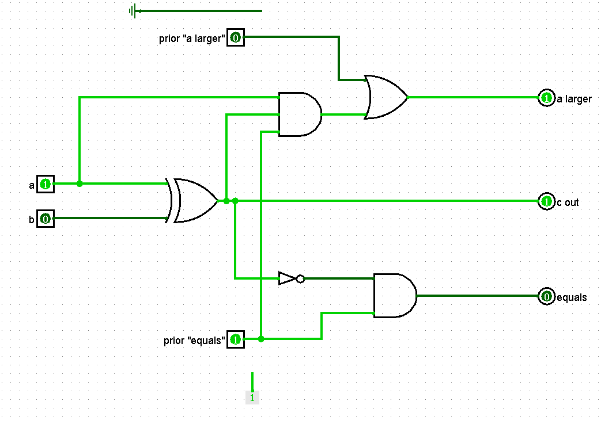
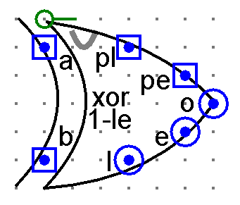
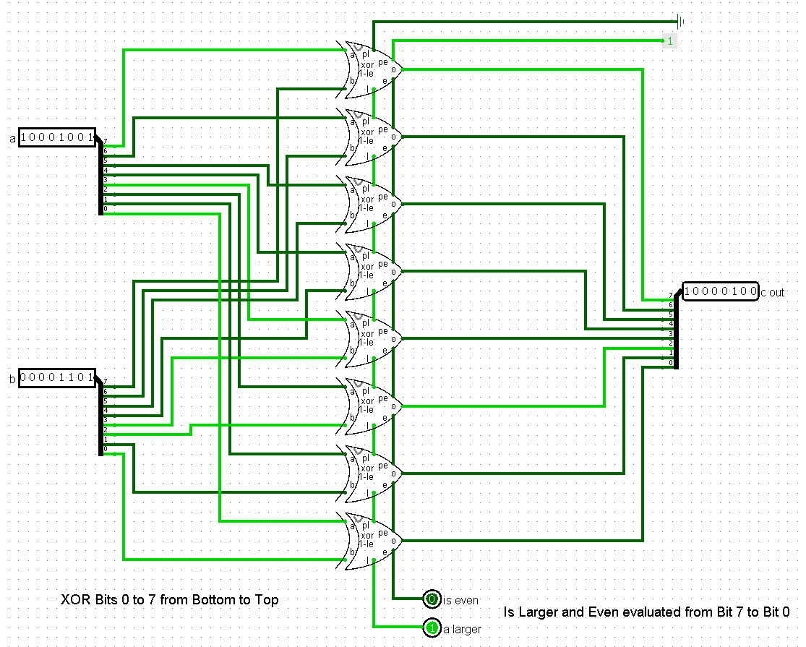
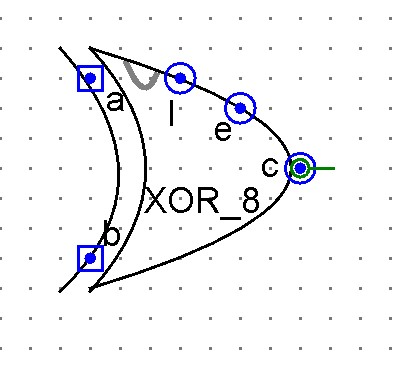

Two-bit XOR Gate Properties
The first thing we want to do is to look at the truth table for an **XOR Gate**, which gives us our primary XOR result:

The truth table shows that when the two inputs are the same, the output is 0 and when they are different the output is 1. This is the definition of the exclusive OR. Now we want to consider if we can check if the 2 bits are equal or not and if they are equal, we want an output of 1. If they are not equal we want an output of 0. If we consider the truth table provided, we can see that the XOR gate produces the exact opposite of what we want to find out of the 2 inputs are equal. So to get an equals evaluation, we can branch off the output and add a NOT gate to this new circuit to get the equals bit.

The third function that we want to perform is to output a 1 if a is larger than b and a 0 otherwise. We can do this by adding an AND gate that takes as inputs, a and the output from our XOR gate. When the XOR result is 0, the two values, a and b, are the same so "a" cannot be larger than b (so the "a larger" result will be 0). When the XOR gate result is 1, the two values of "a" and "b" are different, one is 1 and the other is 0. "a" is larger when it is 1 and "b" is 0. We can get this result by putting the value of "a" into the AND gate with the output from the XOR (If we wanted to check if "b" is larger, we would use "b" and the XOR result as the inputs to the AND gate). This is shown in the diagram below.

You should create this circuit and test it to verify that for each of the 4 possible input combinations, you get the correct values for the output, equals and larger bits.
Extending to Higher Order bits
For each bit combination, we have the output from the XOR plus the "equals" bit and the "a larger" bit. In an 8-bit function, we need to account for the results from the other bits in our evaluation of equals and larger (The output is bit-by-bit result so the result for any one bit location set is not impacted by other results). In evaluating the larger and equals, it is easiest to work from the higher value bits to the lower ones. Doing the evaluation in this order simplifies the overall comparison process.
To do this, we first should consider that we have 3 possible conditions from the higher to the next lower bit that are:
- The higher order bit for "a" is larger so continued evaluation is not required (since higher bit for "a" is larger, comparisions are done)
- The higher order bit for "a" equals that for "b" - so "a" may be larger, equals or smaller than "b"
- The higher order bit for "a" is less than for "b" - so "a" is not larger or equals and comparisons are done.
Let's take the first case
In each of the cases, you should test and verify that the results match what they should for all possible combinations of inputs.
We can take the result from the higher order bit for "a larger" and OR that with the "a larger" for the current bit so that if the higher order is larger, then the value this comparison will pass down is also "a larger" regardless of what the evaluation for the current set of bits is.
Case 2
In case 2, the higher order is not larger but it may be equal to. The first thing we want to do is to evaluate the "equals" portion of the circuit. To do that, we want to AND the "prior equals" being passed down with the current bit position evaluation of equals as shown below. This will return equals ONLY when the prior bit is equals and the current bit is equals. Whenever the prior bit is larger or small, then the prior equals will be 0 and the AND ensures that what will get passed down to the next bit location is not equals.
Case 3
The complicating case is when the prior bit is equals, it means that the prior bit is not larger so we need to only check the current bit if the prior bit is equals. If we think about the 3 possible combinations, when the prior bit is equals, then the current bit comparison can determine that "a" is larger. To do this, we need to modify our original 2 input AND gate on the "is Larger" leg of the circuit to a 3 input AND gate to include the "prior equals" result. When the prior equals is "1" or they are equal, the "is Larger" will be evaluated based upon the current bit position.
Again, make sure to build each of these cases and test them in your project to understand and verify that the circuits work as intended. Make sure to modify the circuit appearance of your final version to make it easier to include in the 8-bit chained result you will need for the ALU.
The Complete 8-bit XOR Comparator
To complete the 8-bit evaluation, we need to chain the "a-larger" and "equals" bits from the higher order bits into the next lower level (from 7 to 6 to 5 ... to 0). We also need to take the individual outputs from each bit and place them in the appropriate position for the 8-bit XOR result out. You will need to seed the beginning comparisons for "is larger" and "is even". Since we do these from bit-7 to bit-0, then the input for the 7th bit comparator needs to be 0 for "prior a larger" and 1 for "prior equals". You can test this in your XOR with LE for 1-bit by replacing these inputs with the appropriate constants as indicated in this image.

Because we need to pass values from the XOR comparison from one-bit placement to the next, how you make your 1-bit XOR comparator with "is larger" and "is even" evaluators, it is imperative that you think about where you have the prior inputs and the outputs for passing to the next bit. As you will see below, I choose to setup my 8-bit XOR comparator with bits 0 through 7 stacked from bottom-to-top. Since we evaluate "is larger" and "is even" from left-to-right in our 8-bit inputs (bits 7 to 0), I need to place my "prior" values at the top of my circuit appearance and the outputs at the bottom to pass as inputs to the XOR bit comparator just below it.

I realize that this description might be confusing so the following image shows how my 8-bit "a XOR b with 'is larger' and 'is even' bits" is laid out in my solution. In this image, the single bit XOR evaluations between a and b are from the bottom to the top. The evaluations for "is larger" and "is even" are from the Top to the Bottom so the constants of 1 for "is even" and ground (0) for "is larger" are the inputs to the bit 7 comparison with the evaluation output from the bit 0 comparison.

Component Pin Definitions
For the single-bit comparator circuit components shown above, the pins represent:
a = 1-bit input
b = 1-bit input
pl = prior "is larger"
pe = prior "is equal"
l = "is larger" output
e = "is equal" output
o = XOR result
Make sure to create a new circuit appearance after chaining and verifying that it works, for integration into higher level assemblies. One possible representation is shown below:
